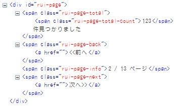

ページング Simple
共通系 - Recruit.UI.Page.Simple - by Recruit Web Service UI Library
概要
AJAXページにて、APIから取得した検索結果の一覧を表示する際などで必ず必要になる「全*ページ中の*ページ目を表示」「前へ」「次へ」等のユーザーインターフェースを自動的に生成するモジュール。
デフォルトでは下記サンプルのようなUIが自動生成されますが、オプションにHTMLを渡す事でレイアウト・デザインを自由にカスタマイズする事も出来ます。
サンプル
動作条件
- jQuery v1.2 以降
- JSONまたはJSONP形式でAPIリクエストするAJAXページである事
簡易なコード例
コピペする事で手軽に再利用が可能なコード例はこちら
使い方
下記のように必要なファイルを読み込んだうえで...
<script type="text/javascript" src="jquery.js"></script> <script type="text/javascript" src="recruit.ui.js"></script>
ページングUIを表示させたい場所にこのようなHTMLを書き...
<div id="rui-page"></div>
最後にこのようなjavascriptコードを書くことで任意のタイミングでページングUIが自動生成されます。下記コードはWebサービスをJSONP形式でリクエストする例です:
function json_request ( start ){
var api_url = 'http://.../ab-road/tour/v1/'
+ '?key=...&area=...&start=' + start
+ 'format=jsonp&callback=?'; // jQuery JSONP おまじない
$.getJSON( api_url, function ( json ){
var page = new Recruit.UI.Page.Simple( json );
page.paginate({
request: json_request
});
//
// この辺りに検索結果を表示するロジックを書く
//
});
}
このように、APIからデータをリクエストする関数 - json_request() - の第一引数に、ページング情報 - 開始アイテム番号 start - を渡すように実装した上で、page.paginate() に同関数を指定する事で、後はライブラリが画面遷移に必要なロジックをすべて自動実装してくれます。まとめると、動作に必要なのは以下の条件になります:
- page.paginate() の引数 request に実際APIを叩きに行く関数を指定する事
- 同関数の第一引数に各ページの開始アイテム番号(start)を渡せるように記述しておくこと
- アクセスするAPIのURLを生成する際にパラメータ start に引数で受け取った開始アイテム番号をセットすること
- JSONP形式の場合、APIのURLに "callback=?" のパラメータを足しておく事 (jQueryの特殊書式)
- JSONP形式の場合、jQueryライブラリのバージョン 1.2.x 以降が必要です
オプション機能
ページングUIのデザインを自由にカスタマイズする
page.paginate() メソッドの引数 template にHTMLを指定する事で、自動生成されるページングのインターフェースをまるごとカスタマイズする事ができます。その際、どの部分を「前へ・次へ」ボタンにするのか、どの部分を「1/12ページ」表示にするかの指定を、以下のようなCSSクラス、および簡単な特殊タグ (template tags) により指定します:
CSSクラス:
| .rui-page-back | 前ページへの遷移UI。このクラスがついた要素 - div / span / img 等 - の中にあるリンクタグ (<a>タグ) がボタンとして機能するようになります。 |
| .rui-page-next | 次ページへの遷移UI。このクラスがついた要素 - div / span / img 等 - の中にあるリンクタグ (<a>タグ) がボタンとして機能するようになります。 |
特殊タグ:
| <#te> | 全件数 (total entries) |
| <#cp> | 現在ページ番号 (current page) |
| <#lp> | 全ページ数 (last page) |
| <#fi> | ページ最初のアイテム番号 (first item) |
| <#fi> | ページ最後のアイテム番号 (last item) |
デザインカスタマイズのコード例:
var tmpl = '全<#te>件 '
+ '(<#fi> - <#li> 件目を表示中) <br />'
+ '<span class="rui-page-back"><a href="">back</a> | </span>'
+ '<span class="rui-page-next"><a href="">next</a></span>';
var page = new Recruit.UI.Page.Simple( json );
page.paginate({
request: json_request,
template: tmpl
});
結果、生成されるUI:
デフォルトUIデザインのCSSクラス設定
引数 template に何も渡さなかった場合のデフォルトUIには、下記の図のように、各要素ごとにCSSクラスが設定されます:

これを参考に、任意のCSS設定を付与する事である程度表示に変化をつける事が出来ます。以下、CSS例:
#rui-page {
font-size: 0.7em;
}
#rui-page .rui-page-total-count {
font-weight: bold;
font-size: 1.4em;
}
実行結果:
これ以上のカスタマイズをするには前項の引数 template によるHTML指定を使ってください。
ページングUIのID値を指定する
デフォルトでは rui-page というID値を持つ要素を探して、そこにページングUIが表示されますが、引数 id に任意のID値を指定する事も出来ます:
var page = new Recruit.UI.Page.Simple( json );
page.paginate({
id: 'my-page-ui',
request: json_request
});
選択可能なページングUIのデザインテンプレート
page.paginate() メソッドの引数 tmpl_type に下記のタイプIDを指定する事により、あらかじめ用意されたデザインテンプレートの中から任意のものを利用する事ができます。これら以外のデザインを利用したい場合は前述の「自由にカスタマイズする」の項を参照してください。
var page = new Recruit.UI.Page.Simple( json );
page.paginate({
request: json_request,
template_type: 'no_space'
});
これらテンプレートにはすべて「デフォルトUIデザインのCSSクラス設定」に定義されているCSSクラスが付与されていますので、追加でデザインを変更することも可能です。
選択可能な tmpl_type 一覧:
> float_right
ページ遷移のナビゲーションが右寄せなUIです。
> float_right_2rows
2段構成のナビゲーションUIです。
間に罫線を引いたりするとしっくり来るUIになるかと思います:
.rui-page-total {
border-bottom: 1px solid #333;
padding-bottom: 5px;
margin-bottom: 5px;
}
> pulldown
プルダウンにて、全ページの中から任意のページにすぐに遷移可能なUIです:
基本はデフォルトのページングUIを使いつつ、その隣にこのプルダウンを設置してあげたりすると良いですね。
> no_space
デフォルトのデザインUIには3箇所に といったタグによってやや強引に要素間のスペースを確保していますが、この no_space はこれら をすべて排除したテンプレートです。よってそのまま使うと要素間が詰まった、使えないUIになりますが、自分でCSSを定義する事により要素間のスペースを自由に設定することが出来ます。
これに以下のようなCSSをつけると...
.rui-page-total {
margin-right: 20px;
}
.rui-page-back {
margin-right: 10px;
}
.rui-page-next {
margin-left: 10px;
}
このように任意の余白調整が可能になります:
複数個所にページングUIを表示させる
結果一覧の上部にページングUIをひとつ、さらに結果一覧の最下部にも多少表示の異なったUIを追加表示させる事も出来ます。その際は引数 sub_uis に配列の形で二つ目以降のUIを設置したい要素ID値および template / template_type を指定します:
var tmpl = '<span class="rui-page-back"><a href=""><前へ</a> </span>' + '<span class="rui-page-next"><a href="">次へ></a></span>';
var page = new Recruit.UI.Page.Simple( json );
page.paginate({
request: json_request,
sub_uis: [
{ id: 'bottom-page-ui', template: tmpl }
]
});
実行結果:
一覧下部のページングUI (<div>タグ) にID値 bottom-page-ui が振られている形です。なお引数 template に何も指定しなかった場合はデフォルトUIが適応されます。